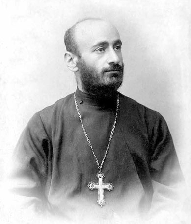

Կոմիտաս (Սողոմոն Գևորգի Սողոմոնյան, սեպտեմբերի 26 (հոկտեմբերի 8), 1869, Քյոթահիա - հոկտեմբերի 22, 1935[1][2][3] կամ հոկտեմբերի 21, 1935[4], Փարիզ, Ֆրանսիա[1]), հայ երգահան, երգիչ, երաժշտական էթնոլոգ, երաժշտագետ, վարդապետ և ուսուցիչ, բանահավաք, խմբավար, մանկավարժ, հայկական ազգային կոմպոզիտորական դպրոցի հիմնադիր։ 1881-1893 թվականներին սովորել է Էջմիածնի Գևորգյան ճեմարանում։
Կոմիտասի գիտական և ստեղծագործական գործունեությունը նոր էջ բացեց հայ երաժշտական մշակույթի պատմության մեջ։ Հայ հոգևոր և ժողովրդական երաժշտությանը վերաբերող իր գիտական ուսումնասիրությունները Կոմիտասը ներկայացրել է Եվրոպայի մի շարք քաղաքներում (Բեռլին, Փարիզ, Ժնև, Լոզան և այլն), այդ թվում` Միջազգային երաժշտական ընկերության համաժողովներին, որի հիմնադիր անդամներից էր։ Կոմիտաս-գիտնականը նպատակ ուներ աշխարհին ներկայացնել հայկական երաժշտական հարուստ մշակույթի ավանդույթները և ապացուցել, որ «հայն ունի ինքնուրույն երաժշտություն»[5]։
Կոմիտասի ստեղծագործական ոճը յուրահատուկ է իր տեսակի մեջ։ Հիմնվելով հայ ավանդական երաժշտական մշակույթի առանձնահատկությունների վրա՝ նա հայտնաբերեց հարմոնիայի և պոլիֆոնիայի կիրառման նոր և հարուստ հնարավորություններ, որոնք պատշաճ էին հայ երաժշտական մտածողությանը։ Նրա երաժշտական ժառանգությունն ընդգրկում է վոկալ («Անտունի», «Կռունկ», «Ծիրանի ծառ», «Ալ այլուղս», «Զինչ ու զինչ» և այլն), խմբերգային՝ ժողովրդական և հոգևոր («Անձրևն եկավ», «Լուսնակն անուշ», «Գութաներգ», «Հայր մեր», «Ով զարմանալի», «Այսօր ձայնն հայրական», «Էջ Միածինն ի Հօրէ», «Տէր, ողորմեա» և այն), և դաշնամուրային («Յոթ պար», «Մշո շորոր» և այլն) ժանրի ստեղծագործություններ։ Կոմիտասի ստեղծագործության մեջ առանձնակի կարևորություն է ներկայացնում իր միակ ավարտուն մեծակտավ գործը՝ «Պատարագ»-ը արական կազմի համար։ Կոմիտասն ունեցել է նաև օպերա ստեղծելու մի քանի մտահղացումներ, որոնք մնացել են անկատար։
|

Վարդապետը վարդապետական ականակուռ լանջախաչով, դեկտեմբեր 10, 1901, Երևան |
|
| Ի ծնե անուն | արմտ. հայ.՝ Սողոմոն Գեւորգի Սողոմոնեան |
|---|---|
| Ծնվել է | սեպտեմբերի 26 (հոկտեմբերի 8), 1869 Քյոթահիա |
| Երկիր | Օսմանյան կայսրություն, Ռուսական կայսրություն և Ֆրանսիա |